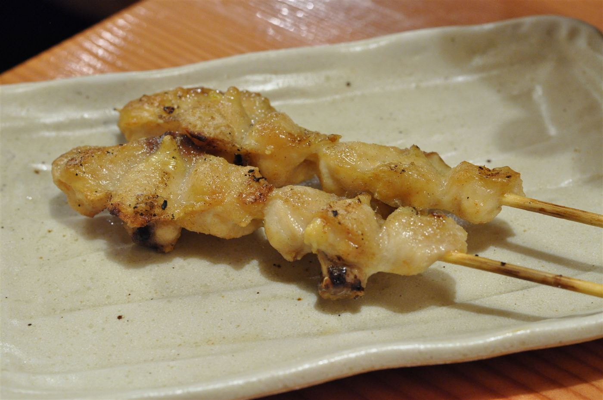

にんにく串
一番人気のひとつが、にんにく串。にんにくはホクホク、香ばしく焼き上げた一本です。「にんにくはホクホクで大満足」というお声もいただいています。
茨城県北相馬郡利根町横須賀で、長らく一人一人のお客様と向き合いながら焼き鳥を焼き続けてきた個人商店です。店を切り盛りするのは、優しい人柄で知られる店主。「優しいおっちゃんが営む店」「店主さんもとてもお優しい」——お客様からそう声をかけていただくことが、何よりの励みになっています。
この店の焼き鳥は、塩もタレも、どちらも美味しいと評判です。「塩もタレも美味しすぎます」というお声をいただくたびに、炭火の前に立つ意味を感じます。
長く商いを続けていると、家族で通ってくださるお客様にも出会います。お母さんが学生の頃から通い、その子どもも大きくなって自分の足で買いに来てくれる——そんな親子二代、三代にわたるご利用は、この店にとって何よりの財産です。値段も高くなく、気軽に立ち寄っていただける町の焼き鳥屋でありたいと思っています。

いただいたお客様の声を、要旨を損なわない範囲で要約してご紹介します(逐語の引用ではありません)。
親子二代・三代にわたってご利用いただいているお客様もいらっしゃいます。小さい頃から親しんだ味を、大人になってからも変わらず買いに来てくださる——そんな温かいお付き合いが、この店の誇りです。
塩もタレも美味しすぎるとのお声。値段も高くなく、手頃に食べられて嬉しいとのこと。店主さんもとてもお優しいと好評です。
一本だいたい150円。にんにく串ととり串を食べたところ、にんにくはホクホク、肉はカリカリで大満足だった、とのお声です。
駐車場もあり、現金払いでさっと購入できると好評です。優しいおっちゃんが営むお店で味も美味しく、また買いに来たい、とのお声です。
茨城県北相馬郡利根町横須賀、地域の皆さまに支えられて営業しています。駐車場もございますので、お車でも安心してお越しください。
ご注文・お問い合わせは、お電話にて承っております。焼きたてをお渡しできるよう、心を込めてご用意いたします。お気軽にお電話ください。
0297-68-3588タップで発信できます